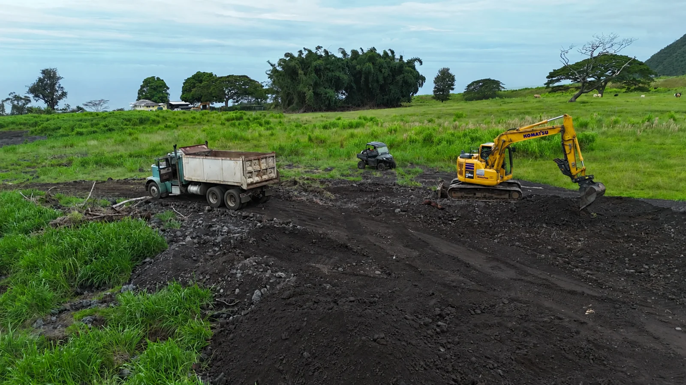
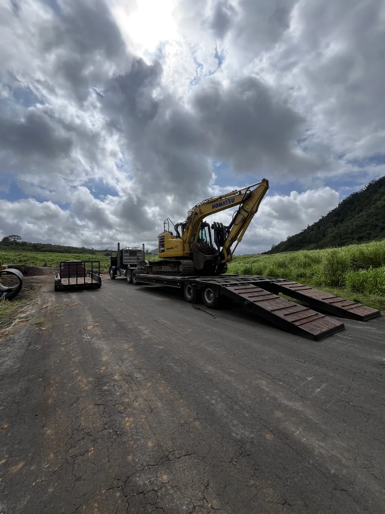
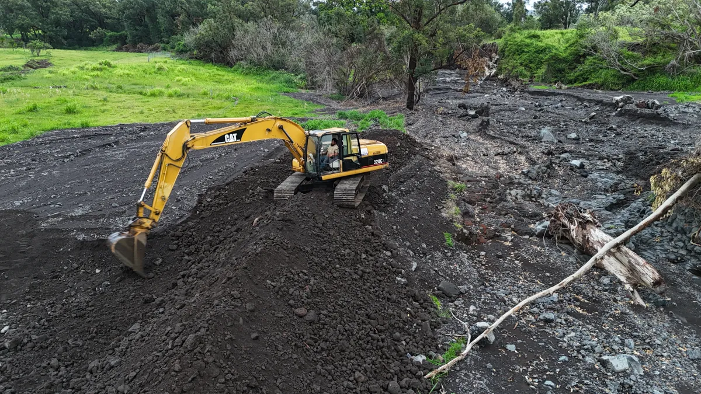
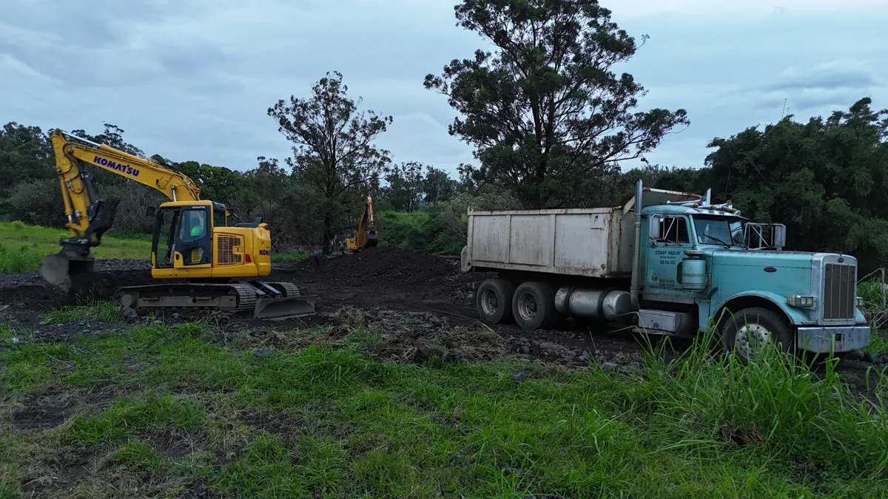
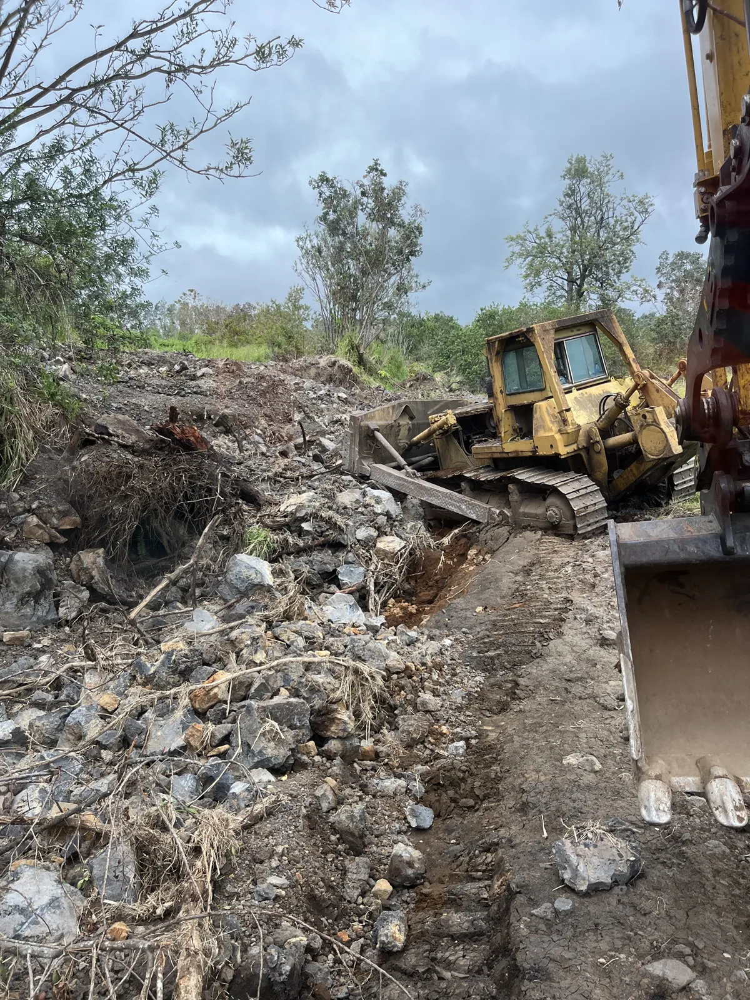
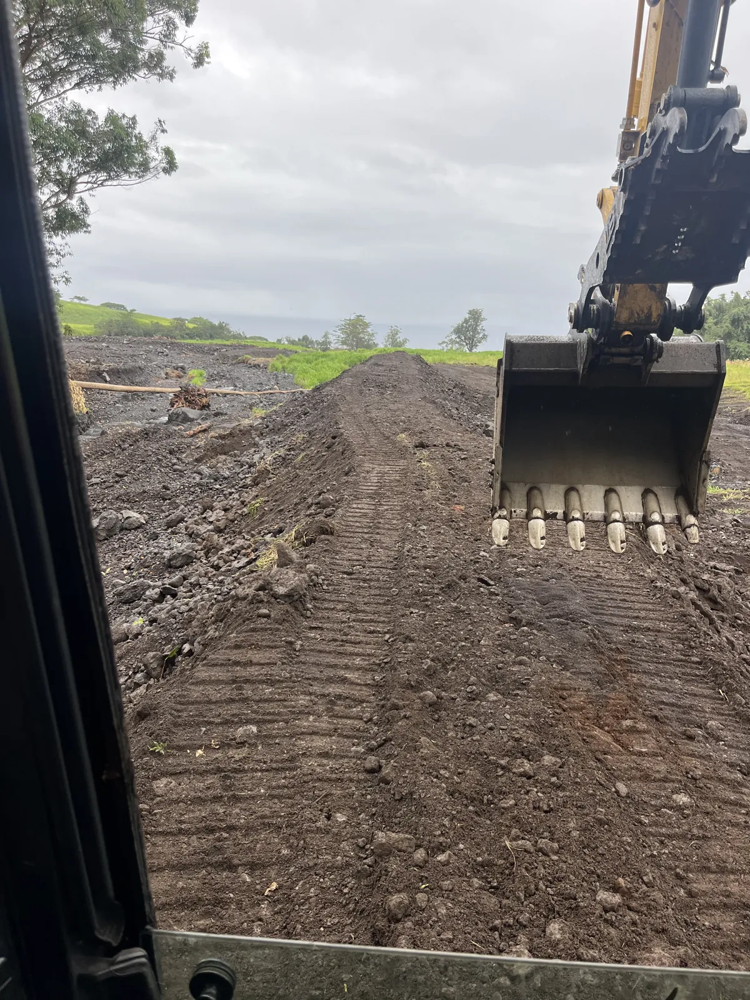

Clearing access
Opening routes for residents and emergency vehicles came first. Ryan also describes rebuilding access for ranchers who could not reach cattle, water tanks, pumps, and damaged fences.

KAʻŪ, HAWAIʻI
Keeping the machines running.
Helping Kaʻū rebuild, one project at a time.
MEET RYAN SANBORN
Raised in Hilo with lifelong ties to Kaʻū’s ranching community, Ryan explains why he showed up after Hurricane Lala—and why he wants to see the work through.
Selected interview excerpts, edited for clarity. Hawaiian place names are corrected where clear; uncertain names are omitted. Watch the video for the full conversation.
Ryan describes Kaʻū as a second home. Cattle, horses, and the ranching community have connected him to this place since childhood.
After the storm, Ryan says the immediate goal was a passable route for residents, supplies, ambulances, and other emergency vehicles—not a finished highway. He describes working alongside other operators and construction crews to clear debris and reconnect access.
Ryan describes building berms to help contain runoff along its original path, restoring roads and access for ranchers, and cleaning up storm debris. His stated aim is to keep water from spreading into new paths, rather than send it toward another property.
Fuel comes first. Ryan also identifies hydraulic hoses, oil, parts, repairs, and the wear on trucks, trailers, and machines as costs of keeping the work moving.
“I look at it as if that was my mom or dad, if that was my grandparent … I’d hope somebody do the same for them.”
He says he wants to see the work through, but worries about having to stop when the crew’s own resources run out.
D talks story with Ryan about Kaʻū, the recovery work, and what it takes to keep going. Press play to load YouTube.
Our land. Our neighbors.
Our shared effort.
Ryan calls Kaʻū his second home. This fund helps the community carry part of the fuel and repair burden that he and his crew have been carrying themselves.
See what support helps cover
01 / HOW IT STARTED
After Hurricane Lala, Ryan says his first priority was getting people, supplies, and emergency vehicles in and out of Pāhala. Working alongside other crews, he helped clear debris and establish a passable lane. That emergency access work grew into an ongoing effort around Pāhala, Wood Valley, and the mountain areas above the community.
Kaʻū has been part of Ryan’s life since childhood, through cattle, horses, and the people who helped raise him. In the interview, he describes helping neighbors as helping family. He also remembers the community bringing meals, water, and cans of fuel to keep the crews going.
02 / THE WORK TODAY
In the interview, Ryan describes six people working across roughly six or seven projects, with three completed at that time. The work includes berm building, debris cleanup, and restoring access to homes and ranch land.

Opening routes for residents and emergency vehicles came first. Ryan also describes rebuilding access for ranchers who could not reach cattle, water tanks, pumps, and damaged fences.
Ryan says the berms aim to keep runoff along its original path after the storm opened new channels. He reports seeing one berm hold during later heavy rain; this is his field observation.
Excavators and dump trucks keep the work moving. Ryan describes long days, frequent repairs, and crew members contributing their own time, equipment, and money.
These descriptions are not an engineering assessment or a promise of flood protection.
03 / FIELD NOTES
Photographs from the work on the ground, shared by the community.

An excavator and dump truck, photographed on the ground.

Rock, roots, and the conditions around the equipment.

A view out of the cab, looking toward the work.
The first photo journal is ready to view.
Visit the progress blog for another view of the work.
05 / TRANSPARENCY
Fuel comes first. Ryan says contributions will help keep the machines running, then cover hoses, oil, parts, and repairs. The figures below come from his interview and describe the work at that time.
Fuel used to run equipment for the documented work.
The day-to-day costs of keeping heavy equipment working.
Upkeep and repairs connected to the work.
Ryan’s estimated daily diesel use when the machines and trucks are all moving.
Calculated from that range using the approximately $7 per gallon figure Ryan gave in the interview. Actual fuel costs vary.
Ryan’s estimate of his own fuel spending since the work began, as of the interview. He did not give an exact total.
Source: Ryan’s interview with D. These are self-reported estimates, not a current expense statement. Ryan says the crew had not been paid and had no county or state contract for this work at the time of the interview.
06 / COMMUNITY SUPPORT
Help keep Ryan and his crew working in Kaʻū. Your direct support is intended for fuel first, followed by the repairs and parts that keep their equipment moving.
Ryan says he does not want families who are already struggling to give their last dollars. Help if you can; the meals, water, and encouragement the community has already shared matter, too.
This is direct personal/community support for Ryan Sanborn. It is not presented as a nonprofit fundraiser or a tax-deductible charitable donation.
When sending Venmo, put note #Ka'usupport.
Check the recipient in Venmo before sending. Venmo’s own terms and privacy policy apply.
Scan the QR code, or use the button above on your phone. Confirm @ryansanborn808 before sending.
VOICES FROM OUR COMMUNITY
Hear from people and families about the construction work Ryan and his crew have done for them since Hurricane Lala.
Community stories.
In their own words.
ABOUT THIS PROJECT
Help Ryan Help Kaʻū documents Ryan Sanborn’s continuing recovery work and the community effort to help fund it. In his interview, Ryan describes permission from property owners for the work on their land. His account explains the crew’s intentions and experience; it does not establish agency approval or an engineering assessment. Photos, field updates, and future cost summaries will help supporters follow the work.
We distinguish confirmed updates from information still being gathered. Costs will carry a reporting period and category. If information changes, the relevant update will be corrected. The work shown here is not a guarantee of flood protection.
This site does not collect payments, display donor lists, or use advertising analytics. Hosting and security providers may process basic access logs. Photos and videos shared on this site are publicly viewable. The interview player connects to YouTube when you press play; YouTube’s privacy policy then applies.
For a correction or removal request, contact the community organizer who shared this site with you.